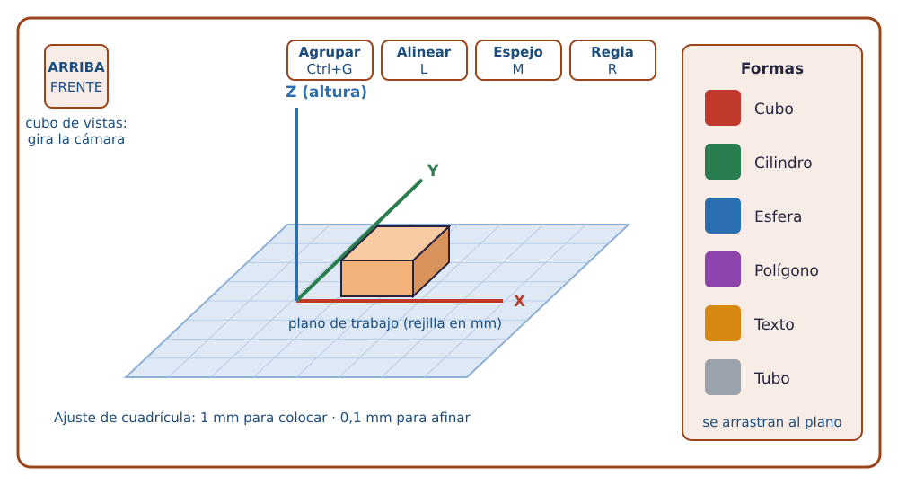
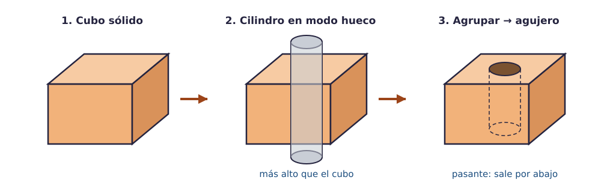
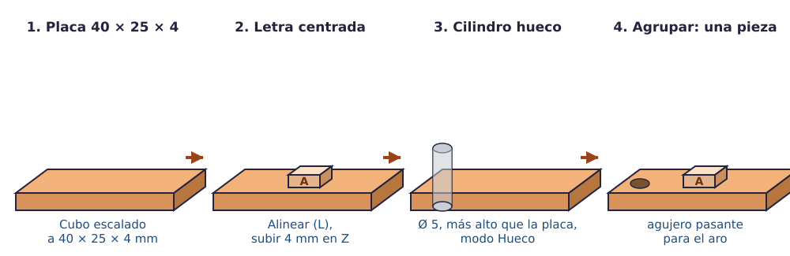

Contenido
Qué vas a aprender
Qué es el diseño asistido por ordenador en tres dimensiones, cómo se maneja TinkerCAD (formas, mover, rotar, escalar, huecos, agrupar, alinear, medir) y cómo organiza un equipo su espacio compartido para que nadie pierda un archivo.
Del boceto al modelo 3D
Un boceto es un dibujo rápido a mano con las medidas principales. Sirve para pensar y para ponerse de acuerdo, pero una impresora no entiende bocetos. Para fabricar hace falta un modelo 3D: una descripción exacta de la pieza, con todas sus medidas en milímetros, guardada en un archivo. Los programas que construyen ese modelo se llaman CAD (diseño asistido por ordenador).
Hay muchos programas CAD. En esta unidad usamos TinkerCAD, que funciona en el navegador y construye las piezas sumando y restando formas sencillas: un cubo, un cilindro, una esfera… En la industria se usan programas paramétricos (Onshape, FreeCAD, Fusion), en los que primero se dibuja un perfil y después se le da volumen; si tienes curiosidad, al final de esta página hay una propuesta de ampliación con Onshape.
Entrar en TinkerCAD y crear un diseño
- Abre tinkercad.com en el navegador del aula y entra con la cuenta educativa o con el código de clase que se indique.
- Pulsa Crear → Diseño 3D. Aparece el plano de trabajo: una rejilla azul sobre la que se colocan las formas.
- Cambia el nombre del diseño (arriba a la izquierda, TinkerCAD le pone uno aleatorio). Usa el nombre
que pida cada actividad, por ejemplo
reto1. Nunca tu nombre ni tus apellidos. - Comprueba que la rejilla está en milímetros (botón Editar cuadrícula, abajo a la derecha). Ahí también puedes cambiar el ajuste de la cuadrícula: 1 mm para colocar, 0,1 mm para afinar.

Moverse por el espacio
| Quiero… | Hago… |
|---|---|
| Girar la vista alrededor de la pieza | Arrastrar con el botón derecho del ratón (o con el botón central). |
| Acercar o alejar | Rueda del ratón. |
| Desplazar la vista sin girarla | Arrastrar con el botón central, o con Mayús + botón derecho. |
| Ver la pieza desde arriba, de frente o de lado | Pulsar las caras del cubo de vistas (arriba a la izquierda). |
| Encuadrar lo seleccionado | Tecla F. |
Los tres ejes
X e Y son los dos ejes del plano de trabajo (ancho y fondo); Z es la altura. Cuando una actividad dice «40 × 25 × 4 mm» está dando, en ese orden, ancho (X), fondo (Y) y alto (Z). La cara que apoya en el plano de trabajo es, casi siempre, la que apoyará en la impresora.
Las cuatro operaciones que lo hacen todo
1. Colocar y mover
Arrastra una forma desde el panel de la derecha hasta el plano. Para moverla: arrástrala, o usa las flechas del teclado (1 mm por pulsación; con Mayús, 10 mm). Para subirla o bajarla en Z, arrastra la flecha cónica negra que sale por encima de la forma, o usa Ctrl + flechas arriba/abajo.
2. Rotar
Al seleccionar una forma aparecen tres arcos curvos, uno por eje. Arrastra el arco o escribe el ángulo. Si arrastras lejos del arco, el giro va de 22,5° en 22,5°; cerca del arco, de grado en grado.
3. Escalar (dar medidas)
Los cuadraditos blancos de las esquinas cambian el ancho y el fondo; el de arriba, la altura. No adivines: haz clic en el cuadradito y escribe la medida exacta en la cajita que aparece. Con Mayús pulsado se escala manteniendo las proporciones.
4. Sólido, hueco y agrupar
Cada forma puede ser sólida (añade material) o hueca (quita material). Un hueco no hace nada hasta que lo agrupas con un sólido: entonces le resta su volumen. Así se hacen los agujeros, las ranuras y las cajas vacías.

Ejemplo: un agujero pasante
- Cubo sólido de 20 × 20 × 10 mm.
- Cilindro de 6 mm de diámetro y 12 mm de alto (más alto que el cubo, para que lo atraviese de sobra). Panel de la derecha: Hueco.
- Selecciona los dos, pulsa Alinear (L) y haz clic en los puntos centrales para centrar el cilindro.
- Selecciona los dos y Agrupar (Ctrl + G). El cilindro desaparece y deja el agujero.
Si el cilindro hueco fuera solo de 10 mm y estuviera un poco levantado, el agujero quedaría ciego (sin salida). Por eso los huecos que atraviesan se hacen siempre más largos que la pieza.
Herramientas que ahorran mucho tiempo
| Herramienta | Atajo | Qué hace |
|---|---|---|
| Agrupar / Desagrupar | Ctrl+G / Ctrl+Mayús+G | Une varias formas en una sola pieza (y aplica los huecos). Desagrupar deshace la unión y recupera los huecos. |
| Alinear | L | Con dos o más formas seleccionadas, muestra puntos para alinear centros o bordes en cada eje. |
| Espejo | M | Voltea una forma en el eje que elijas. Útil para piezas simétricas. |
| Regla | R | Colócala en el plano y las formas muestran sus medidas y su distancia a la regla. Imprescindible para comprobar. |
| Duplicar | Ctrl+D | Copia la forma seleccionada en el mismo sitio. Si mueves la copia y vuelves a duplicar, repite el desplazamiento: cuatro agujeros en fila en tres pulsaciones. |
| Plano de trabajo | W | Coloca un plano de trabajo temporal sobre cualquier cara de una pieza, para construir encima sin cálculos. |
| Ocultar / mostrar | Ctrl+H / Ctrl+Mayús+H | Aparta una forma sin borrarla para ver lo que hay detrás. |
| Deshacer | Ctrl+Z | Lo de siempre. Úsalo sin miedo. |
Actividad 1 · Calentamiento: el llavero
Si ya usaste TinkerCAD en cursos anteriores, esto es un repaso de diez minutos. Si no, es tu primera pieza. Objetivo: una placa con tu inicial en relieve y un agujero para el aro.
| # | Qué haces | Destreza |
|---|---|---|
| 1 | Arrastra un Cubo y escálalo a 40 × 25 × 4 mm. Será la placa. | escalar |
| 2 | Arrastra una letra (categoría Texto y números) con tu inicial. Escálala a unos 18 mm de alto y 3 mm de grosor. | escalar |
| 3 | Coloca la inicial sobre la placa y céntrala con Alinear. | alinear |
| 4 | Sube la inicial 4 mm con la flecha cónica, para que asome por encima de la placa. | mover en Z |
| 5 | Cilindro de 5 mm de diámetro y 10 mm de alto en una esquina, a unos 4 mm de los bordes. Ponlo en modo Hueco. | hueco |
| 6 | Selecciona placa + cilindro y Agrupar: el cilindro perfora la placa. | agrupar |
| 7 | Selecciona placa + inicial y vuelve a agrupar: una sola pieza. | agrupar |
| 8 | Activa la Regla y comprueba que la pieza mide 40 × 25 mm y 8 mm de alto en la letra. | medir |

Extras: redondea una esquina con un cilindro hueco grande; cambia el material a transparente para ver el agujero por dentro; escribe una palabra corta en la cara de atrás.
El espacio compartido del equipo
Un proyecto de fabricación genera muchos archivos: modelos, STL, capturas del laminado, fotos de la pieza, la ficha técnica. Si cada persona los guarda en su ordenador, al final nadie sabe cuál es la versión buena. Por eso el equipo trabaja en un disco virtual compartido: una carpeta en la nube que todas las personas del equipo ven y editan, desde cualquier ordenador del aula o de casa.
| Carpeta del equipo | Qué va dentro |
|---|---|
01_disenos | Los STL exportados, con el nombre de la pieza y una versión: soporte_v1.stl, soporte_v2.stl… |
02_laminado | Capturas de Kiri:Moto con el tiempo y el material estimados de cada versión. |
03_fotos | Fotos del proceso y de la pieza terminada (objetos, nunca personas). |
04_ficha_tecnica | La ficha técnica del equipo y su plano. |
Tres reglas del disco compartido
- Un archivo, una versión. No se sobrescribe la versión anterior: se guarda
_v2. Si la nueva sale mal, la vieja sigue ahí. - Nombres que se entienden solos:
soporte_v2.stldice más quefinal_definitivo_ahora_si.stl. - Nada personal: ni nombres de personas en los archivos ni fotos de caras.
TinkerCAD también permite diseñar a la vez sobre el mismo modelo: desde el diseño, botón Colaborar → generar enlace de invitación → pegarlo en el chat del equipo. Quien abre el enlace edita el mismo diseño en tiempo real. El enlace caduca; si deja de funcionar, se genera otro.
Actividad 2 · Montar el espacio del equipo
- Una persona crea en Drive (cuenta educativa) la carpeta
Estudio_<nombre del equipo>con las cuatro subcarpetas de la tabla y la comparte con el resto del equipo con permiso de edición. - Cada persona sube a
01_disenosel STL de su llavero (Exportar → .STL) para comprobar que todo el mundo tiene acceso. - Abrid un diseño colaborativo de prueba en TinkerCAD y comprobad que dos personas pueden mover formas a la vez.
Ampliación · Onshape, el CAD paramétrico
Material de ampliación (voluntario)
Onshape funciona también en el navegador y se usa en Bachillerato y en la industria. En vez de sumar y restar formas, se dibuja un boceto con cotas y restricciones y se le da volumen con extruir o revolución; si cambias una cota, toda la pieza se actualiza. Requiere cuenta (la cuenta educativa sirve) y sus documentos gratuitos son públicos. Si tu equipo elige una pieza de nivel 3, puede modelarla en Onshape y exportarla a STL igual que desde TinkerCAD.
Test
Comprueba lo esencial de TinkerCAD antes de empezar los retos.